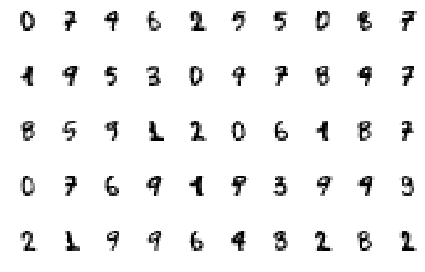
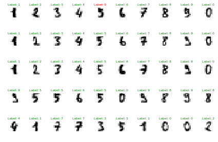
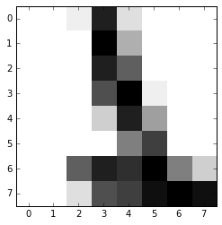

Even though the United States Postal Service, as an organization, was formed in 1971, it traces its roots back to the Post Office Department, an organization formed in 1792 by President Benjamin Franklin. It later evolved into a cabinet-level department in 1872, before finally being transformed into the USPS we know today in 1971, as an agency of the U.S. government.
Back in the day, all mail was hand read and delivered. Even up the turn of the 20th century, antiquated techniques such as the pigeonhole method from colonial times were used for mail-handling. During the 1950's, the post office started intense research on the coding systems used in many other countries and started down the process of automation. In 1982, the first computer-driven, OCR machine got installed in Los Angeles, and by the end of 1984, over 250 OCRs machines were installed in 118 major mail processing centers across the country and were processing an average of 6,200 pieces of mail per hour.
Hand-Written Digits
Nowadays, the Postal Service is one of the world leaders in optical character recognition technology with machines reading nearly +98 percent of all hand-addressed letter mail and +99.5 percent of machine-printed mail, with a single tray sorting machines capable of sorting more than 18 million trays of mail per day.
Let's see if it's possible for you to train a support vector classifier on your computer in a few seconds using machine learning, and if your classification accuracy is similar or better than the advertised USPS stats. For this lab, you'll be making use of the Optical Recognition of Handwritten Digits dataset, provided courtesy of UCI's Machine Learning Repository.
- The dataset for the lab is stored at /Module6/Datasets/optdigits.tes and /Module6/Datasets/optdigits.tra. Check out the official dataset page at the UCI ML Repository to figure out why there are two files.
- Make the requisite changes to get the project running, by providing the path to the .tes and .tra files.
- Train your SVC classifier with the parameters provided, and keep testing until you're able to beat the classification abilities of the USPS.
- Use grid search mechanism to
We are going to answer the question below
What best accuracy score can we get?
import pandas as pd
# The Dataset comes from:
# https://archive.ics.uci.edu/ml/datasets/Optical+Recognition+of+Handwritten+Digits
# Note: Some of the code below is from DAT210X course from Microsoft/Edx
def load(path_test, path_train):
# Load up the data.
# You probably could have written this..
with open(path_test, 'r') as f: testing = pd.read_csv(f)
with open(path_train, 'r') as f: training = pd.read_csv(f)
# The number of samples between training and testing can vary
# But the number of features better remain the same!
n_features = testing.shape[1]
X_test = testing.ix[:,:n_features-1]
X_train = training.ix[:,:n_features-1]
y_test = testing.ix[:,n_features-1:].values.ravel()
y_train = training.ix[:,n_features-1:].values.ravel()
#
# Special:
return X_train, X_test, y_train, y_test
def peekData():
# The 'targets' or labels are stored in y. The 'samples' or data is stored in X
print ("Peeking your data...")
fig = plt.figure()
cnt = 0
for col in range(5):
for row in range(10):
plt.subplot(5, 10, cnt + 1)
plt.imshow(X_train.ix[cnt,:].reshape(8,8), cmap=plt.cm.gray_r, interpolation='nearest')
plt.axis('off')
cnt += 1
fig.set_tight_layout(True)
plt.show()
def drawPredictions(model):
fig = plt.figure()
# Make some guesses
y_guess = model.predict(X_test)
#
# INFO: This is the second lab we're demonstrating how to
# do multi-plots using matplot lab. In the next assignment(s),
# it'll be your responsibility to use this and assignment #1
# as tutorials to add in the plotting code yourself!
num_rows = 10
num_cols = 5
index = 0
for col in range(num_cols):
for row in range(num_rows):
plt.subplot(num_cols, num_rows, index + 1)
# 8x8 is the size of the image, 64 pixels
plt.imshow(X_test.ix[index,:].reshape(8,8), cmap=plt.cm.gray_r, interpolation='nearest')
# Green = Guessed right
# Red = Fail!
fontcolor = 'g' if y_test[index] == y_guess[index] else 'r'
plt.title('Label: %i' % y_guess[index], fontsize=6, color=fontcolor)
plt.axis('off')
index += 1
fig.set_tight_layout(True)
%matplotlib inline
X_train, X_test, y_train, y_test = load('optdigits.tes',
'optdigits.tra')
import matplotlib.pyplot as plt
from sklearn import svm
#
# Get to know your data. It seems its already well organized in
# [n_samples, n_features] form. Our dataset looks like (4389, 784).
# Also your labels are already shaped as [n_samples].
peekData()
Peeking your data...
/Users/Pandu/anaconda/lib/python3.5/site-packages/matplotlib/figure.py:1744: UserWarning: This figure includes Axes that are not compatible with tight_layout, so its results might be incorrect.
warnings.warn("This figure includes Axes that are not "

# Create an SVC classifier. Leave C=1, but set gamma to 0.001
# and set the kernel to linear. Then train the model on the training
# data / labels:
print ("Training SVC Classifier...")
#
#
# Create an SVC classifier named svc
# Use a linear kernel, and set the C value to C
#
from sklearn.svm import SVC
svc = SVC(C=10, gamma=0.001, kernel='rbf')
svc.fit(X_train,y_train)
Training SVC Classifier...
SVC(C=10, cache_size=200, class_weight=None, coef0=0.0,
decision_function_shape=None, degree=3, gamma=0.001, kernel='rbf',
max_iter=-1, probability=False, random_state=None, shrinking=True,
tol=0.001, verbose=False)
# Calculate the score of your SVC against the testing data
print("Scoring SVC Classifier...")
#
score = svc.score(X_test, y_test)
print("Score:\n", score)
Scoring SVC Classifier...
Score:
0.982739420935
# Visual Confirmation of accuracy
drawPredictions(svc)
/Users/Pandu/anaconda/lib/python3.5/site-packages/matplotlib/figure.py:1744: UserWarning: This figure includes Axes that are not compatible with tight_layout, so its results might be incorrect.
warnings.warn("This figure includes Axes that are not "

#
# Print out the TRUE value of the 1000th digit in the test set
#
# .. your code here ..
print ("1000th test label: ", X_test.iloc[[999]])
#
# Predict the value of the 1000th digit in the test set.
# Was the model's prediction correct?
#
print ("1000th test prediction: ", svc.predict(X_test.iloc[[990]]))
test = svc.predict(X_test.iloc[[999]])
1000th test label: 0 0.1 5 13 9 1 0.2 0.3 0.4 0.5 ... 0.22 0.23 0.24 0.25 6 \
999 0 0 1 14 2 0 0 0 0 0 ... 8 3 0 0 2
13.2 10.2 0.26 0.27 0.28
999 11 12 15 16 15
[1 rows x 64 columns]
1000th test prediction: [1]
test = svc.predict(X_test.iloc[[999]])
print(test)
[1]
plt.imshow(X_test.ix[999,:].reshape(8,8), cmap=plt.cm.gray_r, interpolation='nearest')
<matplotlib.image.AxesImage at 0x117f97780>

predictions = svc.predict(X_test)
from sklearn.metrics import classification_report,confusion_matrix
print(classification_report(y_test,predictions))
precision recall f1-score support
0 0.99 1.00 1.00 177
1 0.96 0.99 0.98 182
2 1.00 0.98 0.99 177
3 0.98 0.98 0.98 183
4 1.00 1.00 1.00 181
5 0.98 0.99 0.98 182
6 1.00 0.99 1.00 181
7 0.99 0.96 0.97 179
8 0.98 0.95 0.97 174
9 0.94 0.98 0.96 180
avg / total 0.98 0.98 0.98 1796
Gridsearch
Finding the right parameters (like what C or gamma values to use) is a tricky task! But luckily, we can be a little lazy and just try a bunch of combinations and see what works best! This idea of creating a 'grid' of parameters and just trying out all the possible combinations is called a Gridsearch, this method is common enough that Scikit-learn has this functionality built in with GridSearchCV! The CV stands for cross-validation which is the
GridSearchCV takes a dictionary that describes the parameters that should be tried and a model to train. The grid of parameters is defined as a dictionary, where the keys are the parameters and the values are the settings to be tested.
param_grid = {'C': [0.1,1, 10, 100, 1000], 'gamma': [0.0001, 0.001, 0.01,0.5, 0.1], 'kernel': ['rbf']}
from sklearn.grid_search import GridSearchCV
One of the great things about GridSearchCV is that it is a meta-estimator. It takes an estimator like SVC, and creates a new estimator, that behaves exactly the same - in this case, like a classifier. You should add refit=True and choose verbose to whatever number you want, higher the number, the more verbose (verbose just means the text output describing the process).
grid = GridSearchCV(SVC(),param_grid,refit=True,verbose=3)
What fit does is a bit more involved then usual. First, it runs the same loop with cross-validation, to find the best parameter combination. Once it has the best combination, it runs fit again on all data passed to fit (without cross-validation), to built a single new model using the best parameter setting.
# May take awhile!
grid.fit(X_train,y_train)
Fitting 3 folds for each of 25 candidates, totalling 75 fits
[CV] C=0.1, kernel=rbf, gamma=0.0001 .................................
[CV] ........ C=0.1, kernel=rbf, gamma=0.0001, score=0.945967 - 0.9s
[CV] C=0.1, kernel=rbf, gamma=0.0001 .................................
[CV] ........ C=0.1, kernel=rbf, gamma=0.0001, score=0.941176 - 1.0s
[CV] C=0.1, kernel=rbf, gamma=0.0001 .................................
....
[CV] .......... C=1000, kernel=rbf, gamma=0.5, score=0.103150 - 1.7s
[CV] C=1000, kernel=rbf, gamma=0.1 ...................................
[CV] .......... C=1000, kernel=rbf, gamma=0.1, score=0.102584 - 1.8s
[CV] C=1000, kernel=rbf, gamma=0.1 ...................................
[CV] .......... C=1000, kernel=rbf, gamma=0.1, score=0.105882 - 1.9s
[CV] C=1000, kernel=rbf, gamma=0.1 ...................................
[CV] .......... C=1000, kernel=rbf, gamma=0.1, score=0.107087 - 2.0s
[Parallel(n_jobs=1)]: Done 75 out of 75 | elapsed: 1.5min finished
GridSearchCV(cv=None, error_score='raise',
estimator=SVC(C=1.0, cache_size=200, class_weight=None, coef0=0.0,
decision_function_shape=None, degree=3, gamma='auto', kernel='rbf',
max_iter=-1, probability=False, random_state=None, shrinking=True,
tol=0.001, verbose=False),
fit_params={}, iid=True, n_jobs=1,
param_grid={'C': [0.1, 1, 10, 100, 1000], 'kernel': ['rbf'], 'gamma': [0.0001, 0.001, 0.01, 0.5, 0.1]},
pre_dispatch='2*n_jobs', refit=True, scoring=None, verbose=3)
grid.best_params_
{'C': 10, 'gamma': 0.001, 'kernel': 'rbf'}
grid.best_estimator_
SVC(C=10, cache_size=200, class_weight=None, coef0=0.0,
decision_function_shape=None, degree=3, gamma=0.001, kernel='rbf',
max_iter=-1, probability=False, random_state=None, shrinking=True,
tol=0.001, verbose=False)
grid_predictions = grid.predict(X_test)
print(classification_report(y_test,grid_predictions))
precision recall f1-score support
0 0.99 1.00 1.00 177
1 0.96 0.99 0.98 182
2 1.00 0.98 0.99 177
3 0.98 0.98 0.98 183
4 1.00 1.00 1.00 181
5 0.98 0.99 0.98 182
6 1.00 0.99 1.00 181
7 0.99 0.96 0.97 179
8 0.98 0.95 0.97 174
9 0.94 0.98 0.96 180
avg / total 0.98 0.98 0.98 1796
score = grid.score(X_test, y_test)
print("Score:\n", score)
Score:
0.982739420935